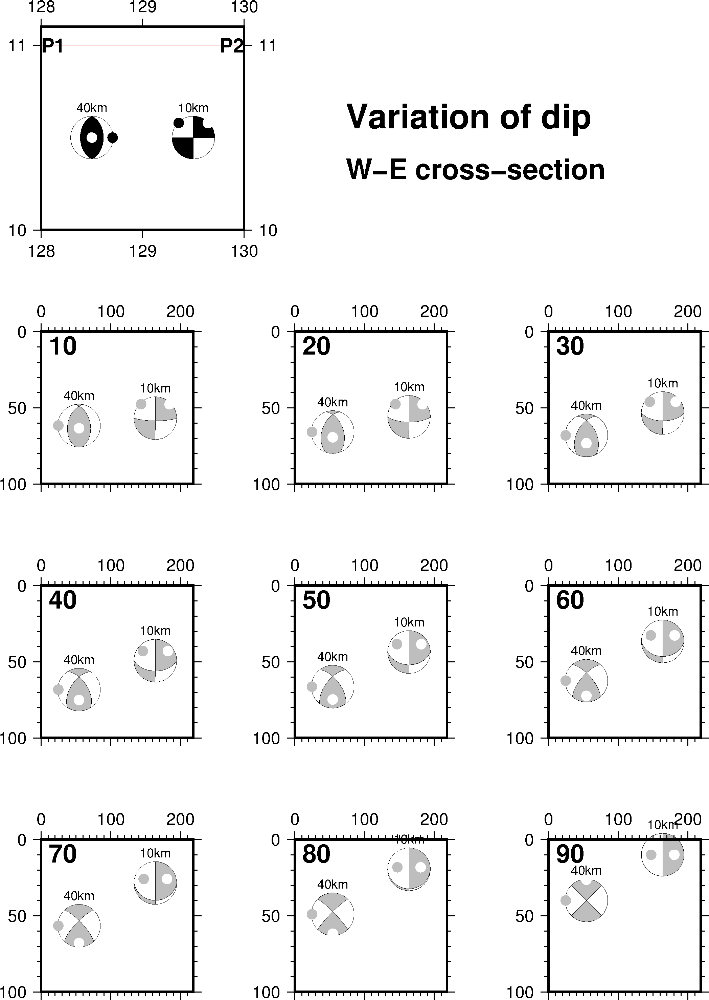
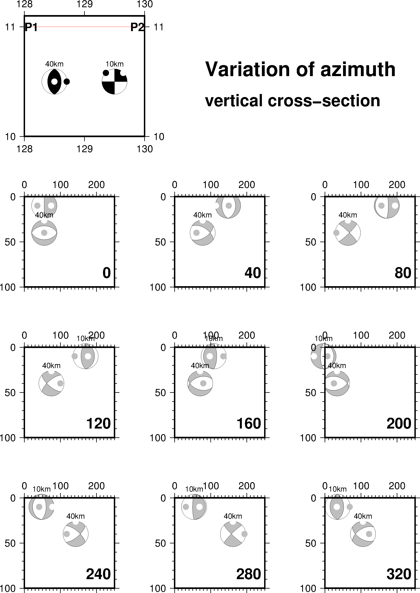

13.43 pscoupe¶
| 官方文档: | pscoupe |
|---|---|
| 简介: | 绘制震源机制解的剖面图 |
psmeca 在绘制震源球时，本质上是取了一个水平剖面，并将三维震源球的下半球投影到该水平剖面上。而 pscoupe 则更灵活一些，可以将三维震源球投影到任意一个剖面上。
- 对于一个水平剖面，会将下半球投影到平面上（即 psmeca 的做法）
- 对于一个垂直剖面，会将垂直平面后的半球投影到平面上
- 对于任意一个非水平的平面而言：
- 北方向为平面的最速下降方向
- 东方向为平面的走向方向
- 下方向则根据右手定则确定
13.43.1 剖面类型¶
-A 选项用于确定剖面。
-Aa<lon1>/<lat1>/<lon2>/<lat2>/<dip>/<p_width>/<dmin>/<dmax>[f]
<lon1>/<lat1>剖面起点的经纬度<lon2>/<lat2>剖面终点的经纬度- 起点和终点确定了剖面的长度
<dip>剖面所在平面的倾角（0表示水平剖面，90表示垂直剖面）<p_width>剖面的宽度（即剖面不是一个平面，而是一个有厚度的长方体）<dmin>/<dmax>是沿着最速下降方向（“北”方向）的最小、最大距离f表示根据剖面的参数自动计算边框的范围- TODO:
<p_width>/<dmin>/<dmax>的具体含义尚不明确
-Ab<lon1>/<lat1>/<strike>/<p_length>/<dip>/<p_width>/<dmin>/<dmax>[f]
<lon1>/<lat1>剖面起点的经纬度<strike>是剖面的走向<p_length>是剖面的长度- 其他参数与
-Aa相同
-Ac<x1>/<y1>/<x2>/<y2>/<dip>/<p_width>/<dmin>/<dmax>[f]
与-Aa选项相同，只是<x>/<y>为笛卡尔坐标而不是地理坐标
-Ad<x1>/<y1>/<strike>/<p_length>/<dip>/<p_width>/<dmin>/<dmax>[f]
与-Ab选项相同，只是<x>/<y>为笛卡尔坐标而不是地理坐标
13.43.2 选项¶
-E<color>- 扩张部分的填充色，默认为白色
-F<mode>[<args>]设置多个属性，可重复使用多次
-Fs<symbol>[<size[/<fontsize>[/<offset>[<u>]]]]见官方文档-Fa[<size>][/<P_axis_symbol>[<T_axis_symbol>]]计算并绘制P和T轴的符号。<size>是符号大小，符号与 psxy 类似，可以取c|d|h|i|p|s|t|x，默认值为6p/cc-Fe<fill>设置T轴符号的填充色-Fg<fill>设置P轴符号的填充色-Fp<pen>P轴轮廓的画笔属性-Ft<pen>T轴轮廓的画笔属性-Fr<fill>在标签后加一个方框
-G<color>- 指定压缩部分的填充色，默认值为黑色
-L[<pen>]- 设置震源球外部轮廓的线条属性
-M- 所有震级使用相同的大小，具体大小由
-S选项的<scale>参数决定。 -N- 地图区域外的震源球也要绘制，默认不绘制。
-Q- 默认会生成一些临时文件，其中包含了剖面和剖面上的震源机制的信息，使用该选项，则不会生成这些临时文件。
-T<num_of_planes][/<pen>]绘制断层平面。
<num_of_planes>可以取：0绘制两个断层面1绘制第一个断层面2绘制第二个断层面
-S选择震源机制解的格式。与 psmeca 中
-S选项用法相同唯一的不同在于，输入文件中
newX和newY对该命令无效，这里加上newX和newY只是为了是的该命令可以使用与 psmeca 相同的输入文件。-W<pen>- 设置断层边界的画笔属性
-Z<cpt>- 指定CPT文件，根据数据文件中第三列的值（即地震深度）确定震源球的压缩部分的颜色。
13.43.3 示例¶
下面的示例展示了 -Aa 选项的用法，指定P1和P2为剖面的起点和终点，并展示了不同倾角时的震源球的效果。
#!/bin/bash
ps=pscoupe_ex1.ps
gmt gmtset PROJ_LENGTH_UNIT inch MAP_TICK_LENGTH_PRIMARY 0.075i \
MAP_FRAME_WIDTH 0.1i MAP_ORIGIN_X 2.5c MAP_ORIGIN_Y 1.3i
# Plotting 2 mechanisms on map
gmt psmeca -R128/130/10/11.1 -JX2i -Fa0.1i/cc -Sc0.4i -B1 -Y8.5i -P -K << EOF > $ps
# lon lat dep str dip rake str dip rake m ex nx ny
129.5 10.5 10 0 90 0 90 90 180 1 24 0 0 10km
128.5 10.5 40 0 45 90 180 45 90 1 24 0 0 40km
EOF
(echo 128 11; echo 130 11) | gmt psxy -R -J -K -O -W0.25p,red >> $ps
gmt pstext -R -J -N -F+f14p,Helvetica-Bold+j -K -O << EOF >> $ps
128 11 ML P1
130 11 MR P2
EOF
# Represent cross-sections between points P1(128E11N) and P2(130E/11N)
# on a plane the dip of which varies
# from quasi horizontal to vertical.
# y dimension is counted along steepest descent on the plane
# so the values of depth are only in the vertical cross-section.
# Variation of dip for cross-section plane
# (WE azimuth, between points (128E,11N) and (130E,11N)))
plots () {
y_offset=-2.5i
for d in $1 $2 $3 ; do
gmt pscoupe -R0/200/0/100 -JX1.5i/-1.5i -Bxa100f10 -Bya50f10 -BWesN \
-Q -L -Sc0.4 -Aa128/11/130/11/$d/60/0/100f -Ggrey -Fa0.1i/cc $4 $5 \
-Y$y_offset -X$x_offset -O -K << EOF
# lon lat dep str dip rake str dip rake m ex nx ny
129.5 10.5 10 0 90 0 90 90 180 1 24 0 0 10km
128.5 10.5 40 0 45 90 180 45 90 1 24 0 0 40km
EOF
gmt pstext -R -J -F+f18p,Helvetica-Bold+jBL -O -K <<< "10 15 $d"
y_offset=0i
x_offset=2.5i
done
x_offset=-5i
}
x_offset=0i
plots 10 20 30 >> $ps
plots 40 50 60 >> $ps
plots 70 80 90 -N >> $ps
gmt pstext -X-5i -R0/10/0/15 -Jx1i -F+jBL+fHelvetica-Bold+f -O << EOF >> $ps
3 8.5 24 Variation of dip
3 8.0 20 W-E cross-section
EOF
rm gmt.*

{kind=link}
pscoupe示例图1
下面的示例将震源球投影到不同方位角的剖面上的效果：
#!/bin/bash
# test/meca/meca_4.sh
ps=pscoupe_ex2.ps
gmt gmtset PROJ_LENGTH_UNIT inch MAP_TICK_LENGTH_PRIMARY 0.075i MAP_FRAME_WIDTH 0.1i \
MAP_ORIGIN_X 2.5c MAP_ORIGIN_Y 1.3i
# Plotting 2 mechanisms on map
gmt psmeca -R128/130/10/11.1 -JX2i -Fa0.1i/cc -Sc0.4i -B1 -Y8.5i -P -K << EOF > $ps
# lon lat dep str dip rake str dip rake m ex nx ny
129.5 10.5 10 0 90 0 90 90 180 1 24 0 0 10km
128.5 10.5 40 0 45 90 180 45 90 1 24 0 0 40km
EOF
(echo 128 11; echo 130 11) | gmt psxy -R -J -K -O -W0.25p,red >> $ps
gmt pstext -R -J -N -F+f14p,Helvetica-Bold+j -K -O << EOF >> $ps
128 11 ML P1
130 11 MR P2
EOF
plots () {
y_offset=-2.5i
for a in $1 $2 $3 ; do
gmt pscoupe -R0/250/0/100 -JX1.5i/-1.5i -Bxa100f10 -Bya50f10 -BWesN \
-Q -L -Sc0.4 -Ab$4/$5/$a/250/90/$6/0/100f -Ggrey -Fa0.1i/cc $7 $8 \
-Y$y_offset -X$x_offset -O -K << EOF
# lon lat dep str dip rake str dip rake m ex nx ny
129.5 10.5 10 0 90 0 90 90 180 1 24 0 0 10km
128.5 10.5 40 0 45 90 180 45 90 1 24 0 0 40km
EOF
gmt pstext -R -J -F+f18p,Helvetica-Bold+jBR -O -K <<< "240 90 $a"
y_offset=0i
x_offset=2.5i
done
x_offset=-5i
}
x_offset=0i
plots 0 40 80 128 10.0 200 >> $ps
plots 120 160 200 128 11.0 400 -N >> $ps
plots 240 280 320 130 10.5 200 -N >> $ps
gmt pstext -X-5i -R0/10/0/15 -Jx1i -F+jBL+fHelvetica-Bold+f -O << EOF >> $ps
3 8.5 24 Variation of azimuth
3 8.0 20 vertical cross-section
EOF
rm gmt.*

{kind=link}
pscoupe示例图2